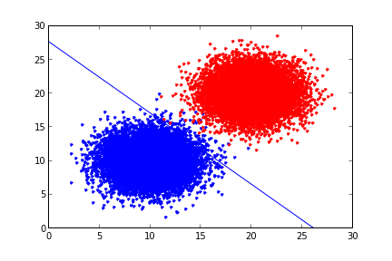

Paralel Lojistik Regresyon, Eşle/İndirge
Lojistik regresyon kodunu eşle-indirge (map-reduce) üzerinden paralelize etmek için literatüre [1-7] bakınca, genel yaklaşımın makinalara bölünen veri parçaları üzerinde ayrı ayrı gradyan çıkışının (gradient aşçent) işletilmesi ve sonuç theta'ların son bir makinada ortalamasının alınması olduğunu görürüz.
Daha önceki lojistik regresyon yazımızda iki farklı gradyan çıkış algoritmasi görmüştük. Bu algoritmalardan kullanacağımız daha basit olanı, her döngüde alpha'yı değiştiren versiyon değil tek alpha kullanan, ve kod içinde zar atan değil, veriyi sırayla işleyen. Bunun birkaç sebebi var, öncelikle altta göreceğimiz üzere veriyi Hadoop'a vermeden önce kendimiz karıştıracağız, yani kod içinde zar atmaya gerek kalmayacak. İkincisi pek çok makinada işlem yapıldığı için tek bir sabit üzerinden azaltma yapmak mümkün değil (fakat her işleyicinin -değişmeyen- kendine has / ayrı bir sabiti olabilir, bu konuyu ileride işleyebiliriz), bu sebeple ve basitlik amacıyla tek sabitli kod kullanıldı. Ayrıca artık döngü (iterasyon) yok, yani veri baştan sona bir kez tarandı mı, o makinanın işlemi bitecek. Fakat büyük veri ortamında (ki zaten onun için Hadoop kullanıyoruz herhalde) elimizde o kadar çok veri olacak ki bu verinin tamamını işleyince zaten 100,200 kere döngüyü işletmek ile aynı etkiyi almış oluyoruz.
Örnek veri olarak alttakini ürettik,
from pandas import *
mean1 = [10,10]
mean2 = [20,20]
cov = [[5,0],[0,5]]
d1 = DataFrame(np.random.multivariate_normal(mean1,cov,10000))
d2 = DataFrame(np.random.multivariate_normal(mean2,cov,10000))
d1['labels'] = 1
d2['labels'] = 0
data = DataFrame(np.vstack((d1,d2)))
data.to_csv("testSet.txt",sep='\t',index=None,header=None)
print data[:4]
0 1 2
0 10.287025 11.158653 1
1 7.390719 12.214295 1
2 11.720941 8.711403 1
3 11.543380 11.627805 1
plt.plot(d1.ix[:,0],d1.ix[:,1],'b.')
plt.hold(True)
plt.plot(d2.ix[:,0],d2.ix[:,1],'r.') %
plt.hold(True)
plt.savefig('logreg1.png')

Altta veriyi işletmeden önce kendimiz karıştırıyoruz,
!sort --random-sort testSet.txt > /tmp/testSet1.txt
'''
Logistic regression for map/reduce written for MRJob,
uses stochastic gradient descent.
'''
from mrjob.job import MRJob
from mrjob.protocol import PickleProtocol
import numpy as np
import os, thread
class MRLogisticRegression(MRJob):
INTERNAL_PROTOCOL = PickleProtocol
def __init__(self, *args, **kwargs):
super(MRLogisticRegression, self).__init__(*args, **kwargs)
self.n = 1
self.m = 3
self.count = 0
self.theta = np.ones((self.m,1))
self.final_theta = np.zeros((self.m,self.n))
def sigmoid(self, arr):
return 1.0/(1+np.exp(-arr))
def stoc_grad_ascent0(self, data_mat, label, theta):
alpha = 0.01
h = self.sigmoid(np.dot(data_mat,theta))
theta = theta.T + (alpha * data_mat * (label - h))
theta = theta.reshape((self.m,self.n))
return theta
def mapper(self, key, line):
tokens = map(np.float,line.split('\t'))
data = np.append(1.0,np.array(tokens[:-1]))
label = np.array(tokens[-1])
self.theta = self.stoc_grad_ascent0(data, label, self.theta)
def mapper_final(self):
yield ("key1", self.theta)
def reducer(self, key, tokens):
for val in tokens:
self.final_theta += val
self.count += 1
yield('result',str(self.final_theta / self.count))
if __name__ == '__main__':
MRLogisticRegression.run()
Üstte eşleyici içinde tek bir tane anahtar üretiyoruz, tüm makinalarda tüm eşleyiciler aynı anahtarı, bir kez üretiyor olacaklar. Bunun sebebi nedir? Ne yapmaya çalıştığımızı hatırlayalım, tüm makinalarda lojistik regresyon işletiyoruz, gradyan çıkışı yapıyoruz, ve sonuçta o makinanın işi bitince elimizde tek bir tane ağırlık vektörü yani theta olacak. İlgilendiğimiz sonuç bu, o yüzden çıktı stdout'a tek bir satır yazılıyor. Peki niye aynı anahtar? Çünkü her makinadaki tüm ağırlık vektörlerinin "hep beraber" bir noktada ortalamasının alınmasını istiyoruz, bunu Hadoop'a yaptırmanın bir yolu herkese aynı anahtarı kullandırtmak, böylece bu anahtarlar tek bir indirgeyiciye (ve makinaya) gidecek, ve orada ortalamaları alınacak. Tüm eşleyicilerin sonucunun tek bir indirgeçiye gitmesi performans problemi çıkartmaz mı? Çıkmaz, çünkü 1000 tane, 10000 tane eşleyici paralel iş yapmış olabilir, ama işleri bitince elimizde 1000,10000 tane ağırlık vektörü olacak, ve bu zaten tek makinanın rahatlıkla başa çıkabileceği bir yüktür.
Bu yaklaşım, eşleyicinin her veri satırı başına bir ya da daha fazla anahtar-değer satırı ürettiği yaklaşımdan (mesela klasik kelime sayma problemi) biraz farklı, o sebeple bu farklılığı belirtmek istedik.
Bir püf nokta, her veri satırı için işletilen map'e de aslında anahtar
ürettirmiyoruz, tüm map çağrıları bittikten sonra son bir kez
çağırılacak map_final'a bu işi yaptırıyoruz. Oraya gelinceye kadar
(map içinde) değişen theta'yı sürekli hafızada tutmuşuz, son noktaya
gelince o sonucu aynı anahtar ile eşleyerek üretiyoruz ve iş bitiyor.
Komut satırından işletelim:
!python logreg.py /tmp/testSet1.txt
using configs in /home/burak/.mrjob.conf
creating tmp directory /tmp/logreg.burak.20131201.234703.391390
writing to /tmp/logreg.burak.20131201.234703.391390/step-0-mapper_part-00000
Counters from step 1:
(no counters found)
writing to /tmp/logreg.burak.20131201.234703.391390/step-0-mapper-sorted
> sort /tmp/logreg.burak.20131201.234703.391390/step-0-mapper_part-00000
writing to /tmp/logreg.burak.20131201.234703.391390/step-0-reducer_part-00000
Counters from step 1:
(no counters found)
Moving /tmp/logreg.burak.20131201.234703.391390/step-0-reducer_part-00000 -> /tmp/logreg.burak.20131201.234703.391390/output/part-00000
Streaming final output from /tmp/logreg.burak.20131201.234703.391390/output
"result" "[[ 9.50705297]\n [-0.32580375]\n [-0.31237616]]"
removing tmp directory /tmp/logreg.burak.20131201.234703.391390
def plot_theta(theta):
x = np.array(arange(-10.0, 40.0, 0.1))
y = np.array((-theta[0]-theta[1]*x)/theta[2])
plot(x, y)
hold(True)
plot(d1.ix[:,0],d1.ix[:,1],'b.')
hold(True)
plot(d2.ix[:,0],d2.ix[:,1],'r.')
hold(True)
ylim(0,30)
xlim(0,30)
theta = [9.50829527,-0.36317422,-0.34354905]
plot_theta(theta)
plt.savefig('logreg2.png')

Kaynaklar
[1] Smola, Scalable Machine Learning, Optimization, http://alex.smola.org/teaching/berkeley2012/slides/4_Optimization.pdf
[2] Bhandarkar, Modeling with Hadoop, http://www.slideshare.net/hadoop/modeling-with-hadoop-kdd2011
[3] Simianer, Joint Feature Selection in Distributed Stochastic Learning for Large-Scale Discriminative SMT, http://simianer.de/P12-1002-slides.pdf
[4] Allen, A Python implementation of binary regularized logistic regression with stochastic gradient descent, packaged as scripts for use with Hadoop streaming}, https://github.com/elsevierlabs/logistic-regression-sgd-mapreduce